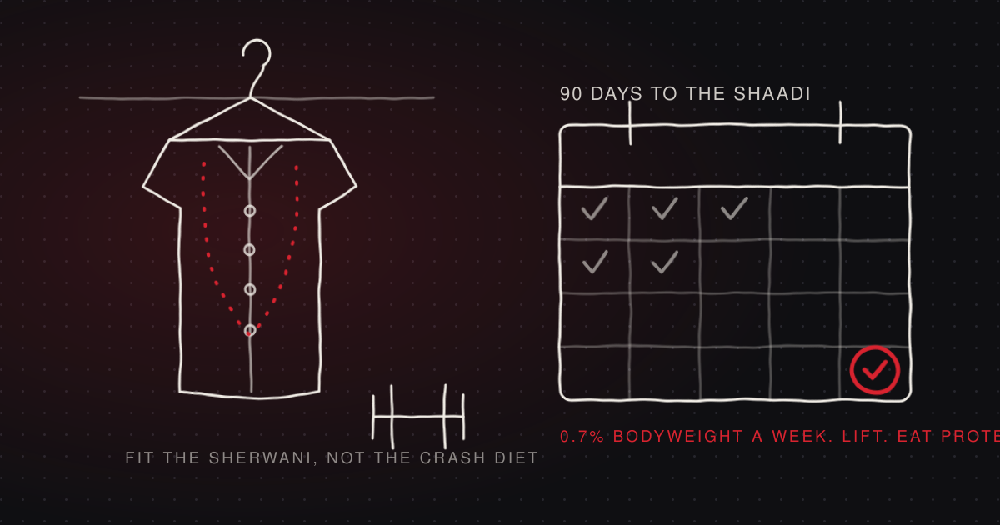
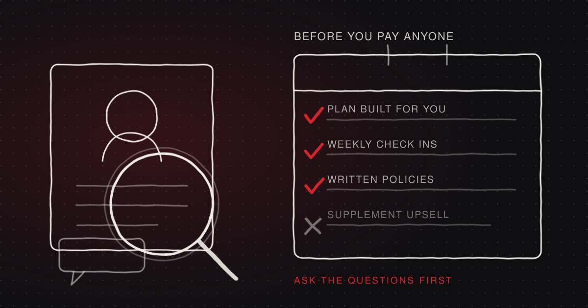
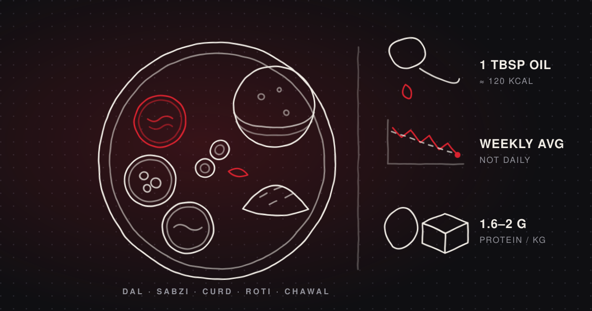
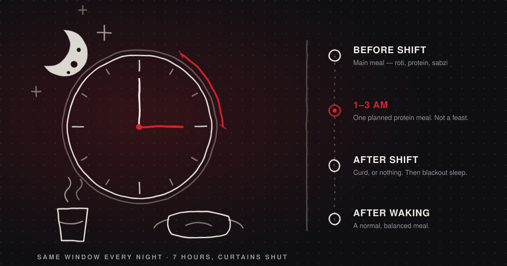
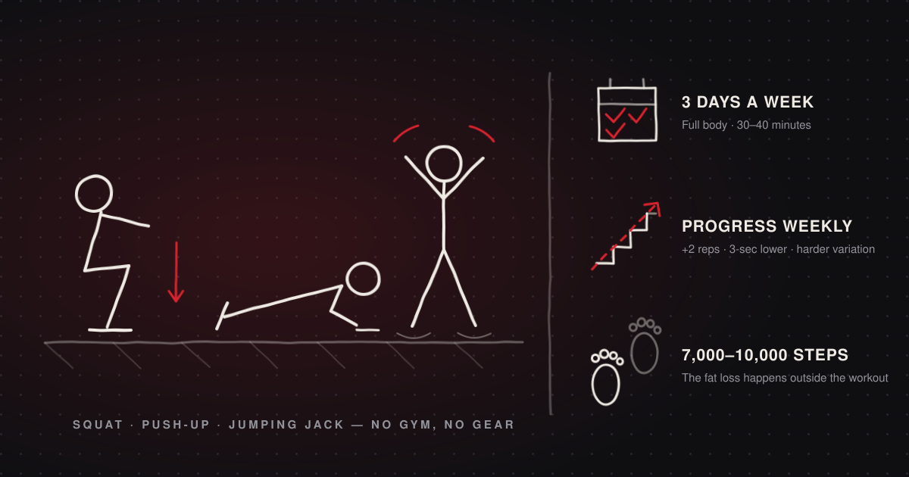
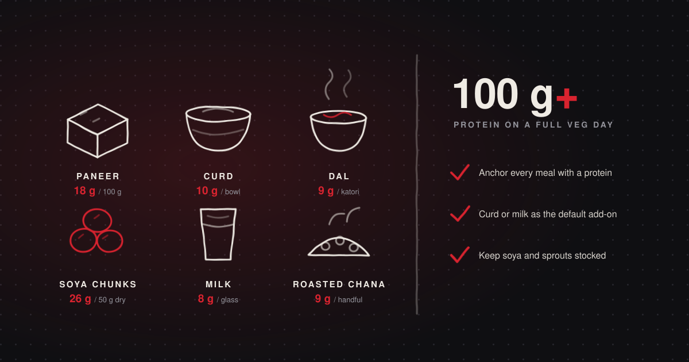

Fat loss
Groom Weight Loss Plan: Get in Shape Before Your Wedding
The plan nobody writes for the groom. What 90 days can realistically do, how to eat at ten functions, and how to time your sherwani fitting.
Read →The DSF Journal
No fad diets, no bro-science. Practical fat loss, nutrition and training advice built around desi food, busy schedules and small budgets — the way transformation actually happens.

The plan nobody writes for the groom. What 90 days can realistically do, how to eat at ten functions, and how to time your sherwani fitting.
Read →
Twelve questions to ask before you pay anyone, the red flags that predict a refund fight, and what the research says actually makes coaching work.
Read →
Lose fat on real desi food — dal, roti, rice, sabzi and paneer. Sample veg and non-veg days, protein targets, and the habits that make it stick.
Read →
BPO, hospital, security, IT — fat loss on nights is a structure problem, not a willpower one. Meal timing, 3 AM food and training on low sleep.
Read →
No gym, no gear, small flat — still no excuse. A complete 3-day beginner plan you can do at home, with sets, reps and how to keep progressing.
Read →
"I'm veg so I can't get protein" is a myth. The full list with protein per serving, plus a sample vegetarian day that crosses 100 g.
Read →Nothing matched .
Only six articles live here so far — try one of these instead.